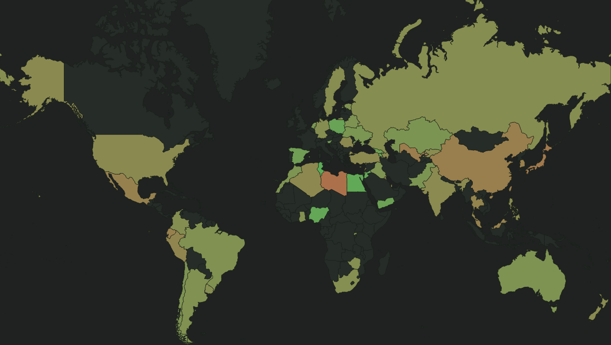

I started by going to the WVS-website to find something interesting, and the question that caught my eye was “What is the most serious problem in the world?”. Using the online tool WVS provide was quite a pain as it was slow and it was really hard to clearly and easily see the data I was interested in.
The question had several categories but I decided to only focus on poverty, which was the most common answer by nearly all countries in the survey. This was done by exporting the data from WVS and then processing it with Excel and my text editor, PHPStorm, to get the data that I wanted.
Using D3.js, I created a world map and bound the data to the countries, using different color codings to visualize the extent to which the countries considered poverty to the the biggest problem in the world. By hovering the mouse over the countries, details about the country is displayed in a side panel. One can also zoom in the map and move around using the mouse scroll and by clicking and dragging.
To filter the visualization, I added a slider with two stops. The stops represent the lower and upper bound of the percentage for each country.
I thought that it would be interesting to see how poor countries answer the question, if maybe poor countries consider poverty to be a bigger problem than richer countries. To do this, I took data from Gapminder, namely GDP/capita (which had data for most countries). I bound this data to each country in the map and display it in the side bar when hovering over the country. However, I could not find a linear correlation between the two variables.
I have learned a lot about D3.js and look forward to learning more!
First step in the process.
Processing data.
Creating a map.
And a sidebar.